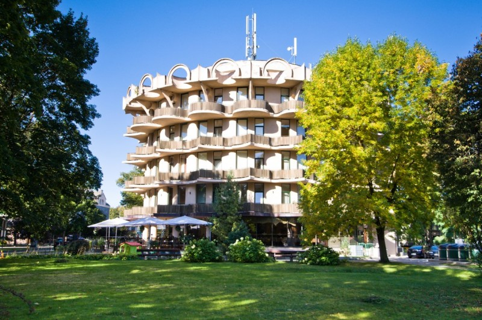
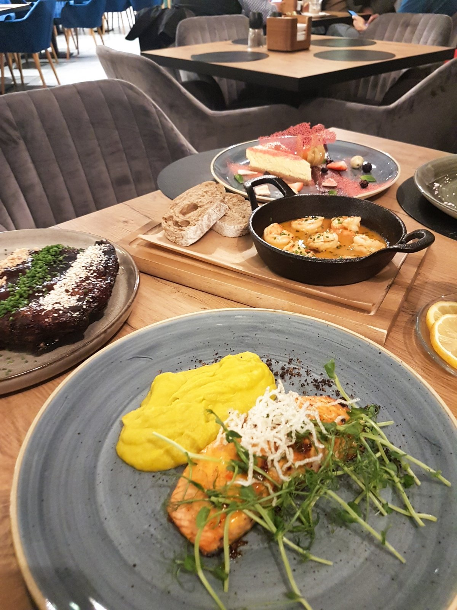
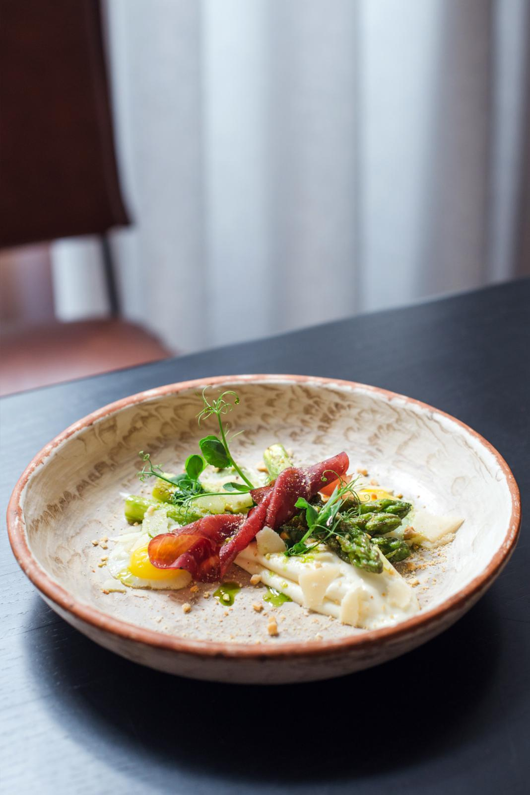

More A'More Restoranas
2020.10.27 13:30
Pradžia APIE MUS Kontaktai
Vieta Jūsų šventei
Restoranas More A'more
apie mus
Restoranas pačioje Vilniaus širdyje
Nuostabus restoranas pačioje Vilniaus širdyje su puikiu vaizdu į Vilniaus arkikatedrą. Puikus maistas ir atmosfera nepaliks abejingų
Atsiliepimai
Ką sako žmonės
Vienareikšmiškai Geriausi kaljanai mieste!
Arūnas T.
Maistas super bei kaljanai nepakartojami.
Tautvydas V.
Begalo nuostabus aptarnavimas. Puiki atmosfera.
Lukas S.
Susisiekite
adresas
T. Vrublevskio 2, Vilnius, Lietuva
Mes dirbame
I - V (12.00-24.00)
VI - VII (12.00-02.00)
Rezervacijas
+370 667 50766
info@moreamore.lt+370 667 50766
info@moreamore.ltNuorodos
APIE MUS KontaktaiVisos teisės saugomos © | Restoranas More A'more
- Restoranas - Vanagupė
- Armėniškas restoranas | Grill Patiekalai | Armenian Grill
- Restoranas Natali - Event guru
- Bizarre Restoranas ir Baras - Tavo pasaulis senamiesčio ...
- Restoranas Panevėžyje „Déjà vu“ - Viešbutis „Romantic ...
- Restoranas - Drevernos uostas
- Restoranas - ORO Dubingiai
- Kuchmistrai - Didikų virtuvė
- 30 Geriausių restoranų - 2019 - Nr.1 - Džiaugsmas
- Unikalioje Senamiesčio vietoje įsikūrė naujasis L ...
- Restoranas - Vanagupė
Beje, visi pagrindiniai ingredientai čia yra lietuviški: „Galima sakyti, esame Tymo turgaus restoranas – apie 70 proc. produktų keliauja iš ten“, – išduoda Martynas. Be to, šis restoranas tobulėja ne metais, o mėnesiais: „Pats pastebiu, kad dabar daug geriau vytiname mėsą, rauginame daržoves ir pan.
- Armėniškas restoranas | Grill Patiekalai | Armenian Grill
Restoranas. Europietiškų tradicijų virtuvė, vertinantiems gurmanišką ir sveiką maistą . Kviečiame apsilankyti jaukiame restorane, kuris puikiai įvertintas nuolatinių mūsų svečių. Rytais čia kviečiame paskanauti gausių ir gardžių pusryčių, dienos metu greitai papietauti, vakare – jaukiai pasimėgauti europietiškos ...
- Restoranas Natali - Event guru
ŠEŠTADIENIAIS restoranas nedirba, bet savo siūlomus DIENOS PIETŲ patiekalus, užsakytus per www.MOKSLININKU.lt svetainę, pristatome beveik KIEKVIENĄ DIENĄ (I-VI) nuo 11 iki 17 val. Pagrindiniai patiekalai. Vištienos kumpeliai. € 3.90. saldžiarūgščiame padaže, pateikiami su ryžiais.
- Bizarre Restoranas ir Baras - Tavo pasaulis senamiesčio ...
Esame armėniškas restoranas kuriame teikiami nuostabūs armėniško tipo grill patiekalai. Štai delfi nuoroda, kurioje yra aprašytas apsilankymas mūsų restorane – Staipsnis 1. Taip pat mūsų šefai yra puikūs savo srities ekspertai, kurie puikiai žino apie nuostabų maistą.
- Restoranas Panevėžyje „Déjà vu“ - Viešbutis „Romantic ...
Sveiki atvykę! Restoranas „KUCHMISTRAI“ – autentiškoje Zyplių dvaro aplinkoje įkurtas ir Lietuvos didikų virtuvės paveldą puoselėjantis restoranas, siekiantis išsaugoti ne tik kulinarinį, bet ir kultūrinį krašto paveikslą.
- Restoranas - Drevernos uostas
Restoranas Galerija Kviečiame apsilankyti restorane „Dreverna“ , kuriame rafinuotas patiekalų meniu ir elegantiškas pateikimas nustebins ir pakerės, o dauguma mūsų žuvies patiekalų gaminami iš šviežios, vietos žvejų sugautos žuvies.
- Restoranas - ORO Dubingiai
SAKARTVELO Esame gruziniškas restoranas, teikiantis nuostabų, autentišką gruzinų maistą. Kokybę „Sakartvelo“ garantuoja rinktiniai produktai ir net tokie niuansai, kaip mėsos paruošimas tik pačių gruzinų, kurių maisto kokybė yra nepalyginamai aukštesnė. Dabar gruzinišką maistą galite užsisakyti ir į namus! Užsisakyti! meniu Gruzinų restoranas Kas tas sakartvelo?
- Kuchmistrai - Didikų virtuvė
Restoranas „Onorė“ pasitiks nuo pat ankstyvo ryto ir bus pasiruošęs Jus palepinti. Nesvarbu, ar tai darbingos dienos pradžia su puodeliu stipraus espresso, ar tingūs savaitgalio pusryčiai su čia pat iškeptomis bandelėmis ir garuojančiu omletu.
- 30 Geriausių restoranų - 2019 - Nr.1 - Džiaugsmas
2018-06-20 Paskelbtas geriausias pasaulio restoranas, o jau kitą savaitę paaiškės ir Lietuvos Vakar Ispanijos Bilbao mieste nuaidėjo pasaulio restoranų apdovanojimų ceremonija. Specialaus renginio metu buvo paskelbtas kasmetinis 50 geriausių pasaulio restoranų sąrašas (The World‘s 50 Best Restaurants), o pirmoje vietoje šiemet ...
- Unikalioje Senamiesčio vietoje įsikūrė naujasis L ...
Bizarre restoranas yra įsikūręs pačioje senamiesčio širdyje. Trys skirtingos virtuvės - trys skirtingos patirtys ir nepamirštami įspūdžiai.
Beje, visi pagrindiniai ingredientai čia yra lietuviški: „Galima sakyti, esame Tymo turgaus restoranas – apie 70 proc. produktų keliauja iš ten“, – išduoda Martynas. Be to, šis restoranas tobulėja ne metais, o mėnesiais: „Pats pastebiu, kad dabar daug geriau vytiname mėsą, rauginame daržoves ir pan.
Restoranas. Europietiškų tradicijų virtuvė, vertinantiems gurmanišką ir sveiką maistą . Kviečiame apsilankyti jaukiame restorane, kuris puikiai įvertintas nuolatinių mūsų svečių. Rytais čia kviečiame paskanauti gausių ir gardžių pusryčių, dienos metu greitai papietauti, vakare – jaukiai pasimėgauti europietiškos ...
ŠEŠTADIENIAIS restoranas nedirba, bet savo siūlomus DIENOS PIETŲ patiekalus, užsakytus per www.MOKSLININKU.lt svetainę, pristatome beveik KIEKVIENĄ DIENĄ (I-VI) nuo 11 iki 17 val. Pagrindiniai patiekalai. Vištienos kumpeliai. € 3.90. saldžiarūgščiame padaže, pateikiami su ryžiais.
Esame armėniškas restoranas kuriame teikiami nuostabūs armėniško tipo grill patiekalai. Štai delfi nuoroda, kurioje yra aprašytas apsilankymas mūsų restorane – Staipsnis 1. Taip pat mūsų šefai yra puikūs savo srities ekspertai, kurie puikiai žino apie nuostabų maistą.
Sveiki atvykę! Restoranas „KUCHMISTRAI“ – autentiškoje Zyplių dvaro aplinkoje įkurtas ir Lietuvos didikų virtuvės paveldą puoselėjantis restoranas, siekiantis išsaugoti ne tik kulinarinį, bet ir kultūrinį krašto paveikslą.
Restoranas Galerija Kviečiame apsilankyti restorane „Dreverna“ , kuriame rafinuotas patiekalų meniu ir elegantiškas pateikimas nustebins ir pakerės, o dauguma mūsų žuvies patiekalų gaminami iš šviežios, vietos žvejų sugautos žuvies.
SAKARTVELO Esame gruziniškas restoranas, teikiantis nuostabų, autentišką gruzinų maistą. Kokybę „Sakartvelo“ garantuoja rinktiniai produktai ir net tokie niuansai, kaip mėsos paruošimas tik pačių gruzinų, kurių maisto kokybė yra nepalyginamai aukštesnė. Dabar gruzinišką maistą galite užsisakyti ir į namus! Užsisakyti! meniu Gruzinų restoranas Kas tas sakartvelo?
Restoranas „Onorė“ pasitiks nuo pat ankstyvo ryto ir bus pasiruošęs Jus palepinti. Nesvarbu, ar tai darbingos dienos pradžia su puodeliu stipraus espresso, ar tingūs savaitgalio pusryčiai su čia pat iškeptomis bandelėmis ir garuojančiu omletu.
2018-06-20 Paskelbtas geriausias pasaulio restoranas, o jau kitą savaitę paaiškės ir Lietuvos Vakar Ispanijos Bilbao mieste nuaidėjo pasaulio restoranų apdovanojimų ceremonija. Specialaus renginio metu buvo paskelbtas kasmetinis 50 geriausių pasaulio restoranų sąrašas (The World‘s 50 Best Restaurants), o pirmoje vietoje šiemet ...
Bizarre restoranas yra įsikūręs pačioje senamiesčio širdyje. Trys skirtingos virtuvės - trys skirtingos patirtys ir nepamirštami įspūdžiai.
  